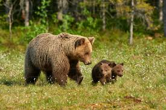
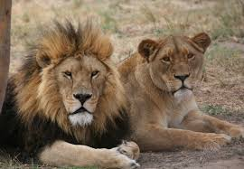
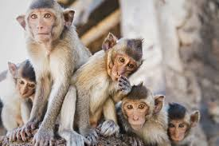
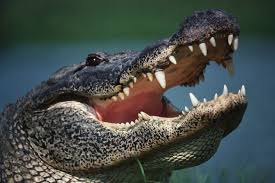

The Five types of Animals
1. Bears

Bears are large animals with short tails that mainly live in the Americas,
Asia, and Europe. They are the largest of the carnivores, or flesh-eating land
mammals. However, besides the meat-eating polar bears and the bamboo-eating panda
bears, most bears are omnivorous (eating both plant and animal matter). Although
bears have a reputation for being fierce and aggressive, they are more often peaceful
and solitary creatures. They usually gain weight in the autumn and sleep fitfully
through much of the winter, but they do not truly hibernate. Despite their bulk, most
bears climb with ease and swim strongly.
Please Click here for more info!
2. Girraffes

Giraffes are the tallest land animals. A giraffe could look into a second-story
window without even having to stand on its tiptoes! A giraffe's 6-foot (1.8-meter)
neck weighs about 600 pounds (272 kilograms). The legs of a giraffe are also 6 feet
(1.8 meters) long. The back legs look shorter than the front legs, but they are about
the same length. A giraffe's heart is 2 feet (0.6 meters) long and weighs about 25 pounds
(11 kilograms), and its lungs can hold 12 gallons (55 liters) of air! Its closest relative
is the okapi.
Please Click here for more info!
3. Lions

Living in the grasslands, scrub, and open woodlands of sub-Saharan Africa,
the lion is the second largest cat in the world. It is about 1.6-2 m (5-8 ft.)
long from head to rump and weighs up to 227 kg (500 lb.). It is dwarfed in size only
by the tiger, which is closely related and has a very similar body type.
Please click here for more info!
4. Monkeys

Monkeys are intelligent, social animals. They are members of the primate group of mammals,
which includes apes and humans. There are approximately 200 different species of monkeys.
Scientists classify them as old world monkeys or new world monkeys. Baboons, drills, mandrills,
macaques, guenons, langurs, and colobus monkeys are examples of old world monkeys. Keep reading
to learn more facts about monkeys.
Please click here for more info!
5. Alligators

Alligators are fascinating creatures that have been around for millions of years! Let's
dive into some cool facts about these amazing reptiles.
Alligators are large reptiles that live in freshwater environments like rivers, lakes,
and swamps. They are cold-blooded, which means they rely on the sun to warm up.
Please click here for more Info!